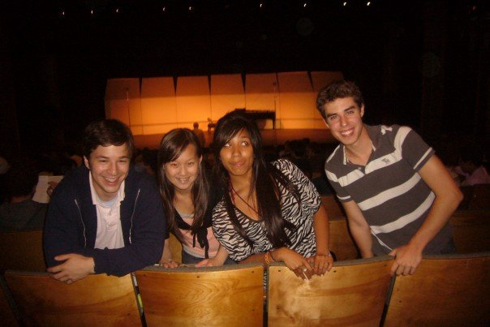
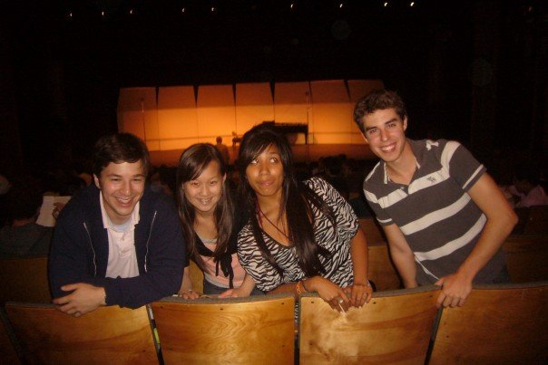

California Summer Music - Video CompilationPosted by Alex Wang on Tuesday, July 29, 2008
With your permission, we will have these on display at the reception. If your file is too big, try uploading to Dropbox and sending a link.

 
